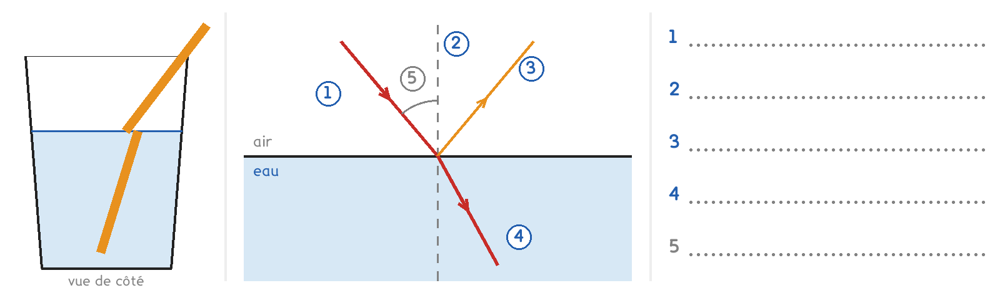
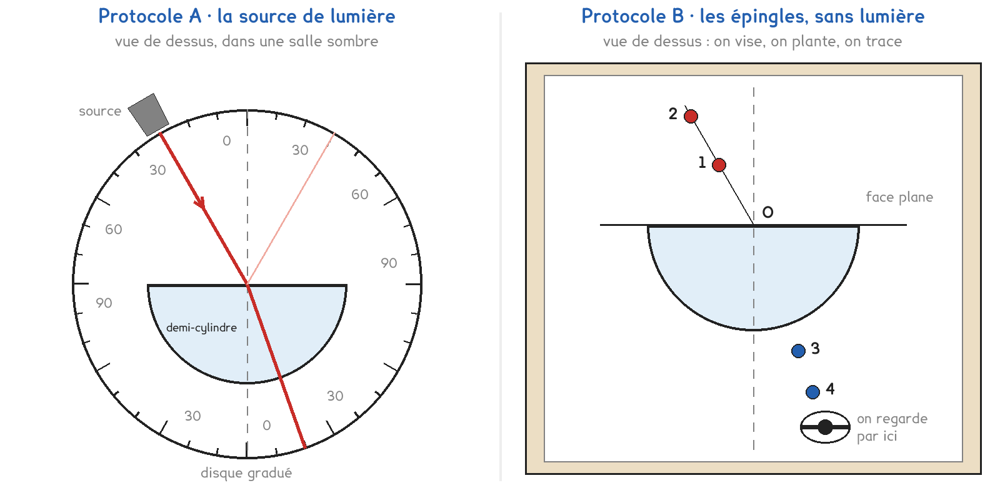
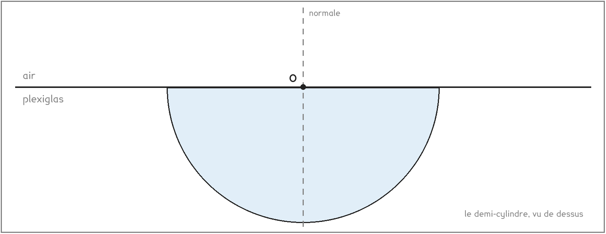

CAP · toutes spécialités · TP commun CAP-05
Pourquoi une paille paraît-elle cassée dans un verre d'eau ?
3 figures
Sujet. Une paille plonge dans un verre d’eau. Vue de côté, elle paraît cassée à la surface de l’eau. Sortie du verre, elle est pourtant bien droite.
Problématique : pourquoi une paille paraît-elle cassée dans un verre d’eau ?
a) Écrire les noms : normale, rayon incident, réfléchi, réfracté, angle i.

Série · depuis la normale. Les angles se mesurent depuis la normale, jamais depuis la surface. Un rayon à 60° de la surface est à 90 − 60 = 30° de la normale. Le premier est fait.
| Angle avec la surface | 60° | 45° | 30° | 70° | 20° | 55° |
|---|---|---|---|---|---|---|
| Angle avec la normale | 30° |
La source du protocole A peut être un laser de classe 2.
b) Entourer la règle : on peut regarder le faisceau · on ne vise jamais un œil
Deux protocoles répondent à la même question, avec un demi-cylindre de plexiglas.
Protocole A · la source de lumière. Un pinceau de lumière arrive au centre de la face plane. On lit les angles sur le disque gradué. Il faut une source qui marche et une salle sombre.
Protocole B · les épingles, sans lumière. Deux épingles marquent le rayon qui arrive. En regardant à travers le plexiglas, on en plante deux autres alignées avec elles. On trace, puis on mesure au rapporteur.

c) Compléter le tableau pour comparer les deux protocoles, en entourant.
| Protocole A | Protocole B | |
|---|---|---|
| On voit le rayon | oui · non | oui · non |
| On mesure l’angle | sur le disque · au rapporteur | sur le disque · au rapporteur |
| Il faut | une source · des épingles | une source · des épingles |
Les sources du labo sont à remplacer : si aucune ne marche, toute la classe prend B. Le professeur dit ce qui reste disponible.
d) Entourer votre protocole, puis la raison.
Protocole A · Protocole B
parce que : une source marche · aucune source ne marche
Avant de mesurer, on fait une hypothèse.
e) En entrant dans le plexiglas, le rayon, entourer :
continue tout droit · se rapproche de la normale · s’écarte de la normale
Avant de commencer
Laser : classe 2 seulement, faisceau à plat sur la table, jamais vers un œil.
Épingles : piquées droites dans le carton, rangées dans leur boîte à la fin.
Tous les angles se mesurent depuis la normale.
f) Relever les angles mesurés.
| réfraction | réfraction | réfraction | réflexion, miroir | |
|---|---|---|---|---|
| Angle d’incidence i | 30° | 45° | 60° | 30° |
| Angle mesuré |
Le cadre montre la face plane et la normale en O.
g) Pour i = 30°, tracer le rayon incident et le rayon réfracté, noter i et r.

h) Dans le plexiglas, r est, entourer : plus petit que i · égal à i · plus grand que i
Hypothèse e confirmée : oui · non
i) Au miroir, l’angle réfléchi est, entourer : plus petit · égal · plus grand
que l’angle d’incidence.
j) Relever r pour i = 30° chez un groupe qui a pris l’autre protocole.
r = …………………… °. Écart de 3° au plus avec le vôtre : oui · non
Dans l’eau, pour i = 30°, on mesure r = 22°.
k) L’eau dévie la lumière, entourer : plus · moins que le plexiglas.
L’angle de réfraction dépend du milieu · de la couleur de la paille.
Pour finir, on revient au verre d’eau.
l) Pourquoi la paille paraît-elle cassée ? Répondre en une phrase.
Ce que ce TP a établi, à écrire sous la dictée du professeur :
À RETENIR
À compléter en classe, sur la feuille du TP.
Vue du bord, une piscine paraît, entourer, moins profonde · plus profonde qu’elle ne l’est. C’est encore la réfraction : la lumière qui vient du fond change de direction à la surface.
TP commun de physique-chimie, toutes spécialités. Le travail se fait sur la feuille du TP : cette page en est la version à l'écran, sans les lignes à remplir. Rien n'est enregistré.